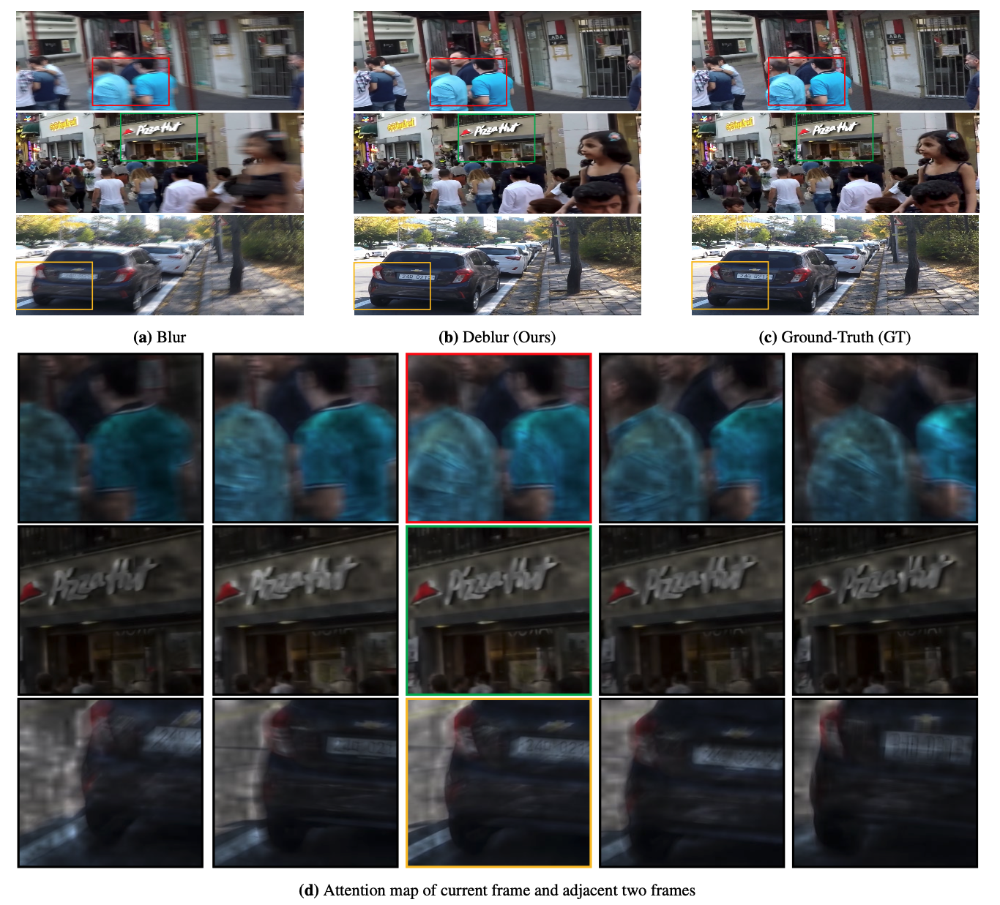
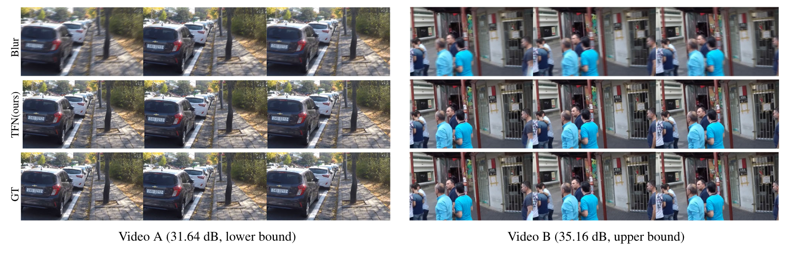

Abstract
Video deblurring is one of the most challenging vision tasks because of the complex spatial-temporal relationship and a number of uncertainty factors involved in video acquisition. As different moving objects in the video exhibit different motion trajectories, it is difficult to accurately capture their spatial-temporal relationships. In this paper, we proposed a memory-based temporal fusion network (TFN) to capture local spatial-temporal relationships across the input sequence for video deblurring. Our temporal fusion network consists of a memory network and a temporal fusion block. The memory network stores the extracted spatial-temporal relationships and guides the temporal fusion blocks to extract local spatial-temporal relationships more accurately. In addition, in order to enable our model to more effectively fuse the multiscale features of the previous frame, we propose a multiscale and multi-hop reconstruction memory network (RMN) based on the attention mechanism and memory network. We constructed a feature extractor that integrates residual dense blocks with three downsample layers to extract hierarchical spatial features. Finally, we feed these aggregated local features into a reconstruction module to restore sharp video frames. Experimental results on public datasets show that our temporal fusion network has achieved a significant performance improvement in terms of PSNR metrics (over 1dB) over existing state-of-the-art video deblurring methods.
Paper & Code & Demo
Experimental Results
Table 1 and Table 2 . The quantitative results on GOPRO and BSD dataset.

Result Visualization
-

Figure 1. Visualizations of attention maps. (a) The input blurred frames. (b) Deblurred frames by the proposed method. (c) The ground truth frames. (d) Attention maps of the middle frame in adjacent frames.
Figure 2. The figure shows the two video clips A and B with the lowest and highest PSNR scores in the GOPRO dataset.
Citation
@article{wang2023memory,
title={Memory Based Temporal Fusion Network for Video Deblurring},
author={Wang, Chaohua and Dong, Weisheng and Li, Xin and Wu, Fangfang and Wu, Jinjian and Shi, Guangming},
journal={International Journal of Computer Vision},
pages={1--17},
year={2023},
publisher={Springer}
}
Concat
Chaohua Wang, Email: 3267928656@qq.com
Weisheng Dong, Email: wsdong@mail.xidian.edu.cn
Xin Li, Email: xin.li@mail.wvu.edu
Fangfang Wu, Email: wufangfang@xidian.edu.cn
Jinjian Wu, Email: jinjian.wu@mail.xidian.edu.cn
Guangming Shi, Email: gmshi@xidian.edu.cn